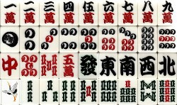

麻雀は中国発祥のゲームなのに、なぜか は上がWで下がMという英語風。そんなデザインからの連想で、「ＭＭ（エムエム）パンツ」などと俗称される。俗称だからどうでもいいけど、手書きするときは当然 上から書く。となれば最初はW と書かなければならないが、「ＭＭパンツ」からの連想？で、つい最初にMと書きやすい。下はそれとシンメトリーに書くので、結果的に逆８索（MW）になってしまう。 は上がWで下がMという英語風。そんなデザインからの連想で、「ＭＭ（エムエム）パンツ」などと俗称される。俗称だからどうでもいいけど、手書きするときは当然 上から書く。となれば最初はW と書かなければならないが、「ＭＭパンツ」からの連想？で、つい最初にMと書きやすい。下はそれとシンメトリーに書くので、結果的に逆８索（MW）になってしまう。
第２次大戦末期、空爆で多くのモノが失われた。麻雀牌も家とともに焼けてしまった。戦後、多くの牌が木製の手彫りで作られた。そんな中に逆８索が結構ある。
そんなかでもっとも有名なのは、巣鴨プリズンの中で製造されたプリズン牌。 この牌の詳細はココ。
この逆８索は、現代の樹脂牌の世界にもある。
 この牌の詳細はココ。
こんな間違いを防ぐためには、俗称を「WW（ダブダブ）パンツ」とするといい。そうすれば上にまずWと書くので、下は自然にＭとなる....って、どうでもいいか....(_ _；
そんなどうでもいい話はおいといて、索子は を除いて直線的な竹デザインとなっているのに、なんでだけＷＭというデザインになっているのか。これがどうしても分からなかった。いや、「もともと、そんなデザインだったから」と云ってしまえばそれっきりの話だが。ところがこのたび、その謎が解明された。 を除いて直線的な竹デザインとなっているのに、なんでだけＷＭというデザインになっているのか。これがどうしても分からなかった。いや、「もともと、そんなデザインだったから」と云ってしまえばそれっきりの話だが。ところがこのたび、その謎が解明された。
索子はもともと穴あき銭をまとめてヒモに通したものデザインだった。この穴あき銭をまとめてヒモに通したものを弔（チャオ＝吊）と云い、昔は千文で一弔（１弔は銅貨10枚に相当）であった（後代になると百文で１弔となったという）。
麻雀博物館篇「麻雀大図録より」

時代とともに抽象的に変化していったが、その過程では穴あき銭をまとめてヒモに通した様子を具体的に表した図柄もあった。
このデザインも広く普及していたようであるが、現代ではほとんど見かけない。しかし四川省あたりでは、いまも現役のデザインらしい。いずれにしたって、この時点でもうはＷＭデザインになっている。
で このようなデザインとは別に、笹の葉風にデフォルメされたデザインがあった。
この笹の葉索子は、現在ではまったく作られていない。しかし昔は結構 作られたようで、いまでもかなり残っている。そしてこの笹の葉索子の８索は星型をしている。とうぜんWM とは、見た目が大きく異なる。
しかし星型８索、中央のくびれた部分を左右からつかんで力まかせにグイと広げると...なんと中央のタテの葉っぱの先端同士がくっつき、上がＷ、下がＭになる。そうかッ、ＷＭ はウルトラマンが作ったのか....(_ _；
|